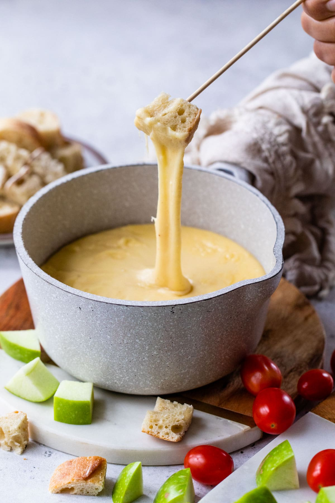

Fondue

Embark on a delightful journey with fondue – a communal and cozy dining experience that revolves around melted cheese or chocolate. Gather your favorite dippables and indulge in the rich, creamy goodness of this Swiss culinary tradition.
Ingredients
- Gruyère cheese
- Emmental cheese
- White wine
- Garlic
- Cornstarch
- Kirsch (cherry brandy)
- French baguette, cubed (for cheese fondue)
- Fresh fruits, marshmallows, and cake cubes (for chocolate fondue)
Steps
- Grate the Gruyère and Emmental cheeses.
- Rub the fondue pot with garlic, then discard the garlic.
- Pour white wine into the fondue pot and heat it until it simmers.
- Gradually add the grated cheeses, stirring continuously until melted and smooth.
- In a small bowl, mix cornstarch with Kirsch and add it to the cheese mixture, stirring until thickened.
- Adjust the consistency with more wine or Kirsch if needed.
- Serve with cubes of French baguette for cheese fondue or with fresh fruits, marshmallows, and cake cubes for chocolate fondue.
- Dip, swirl, and savor the delightful experience of fondue with your favorite companions!